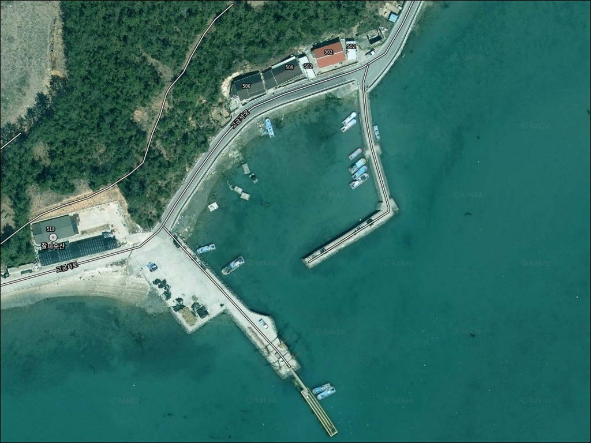
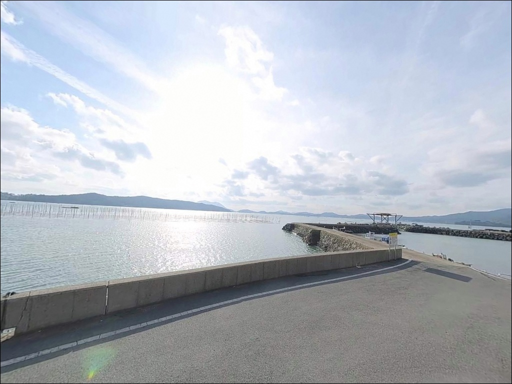
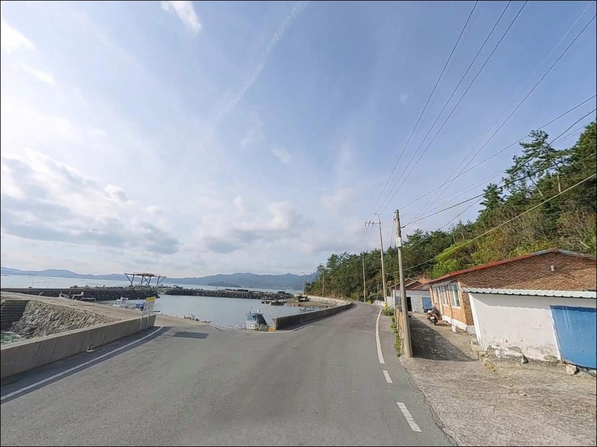
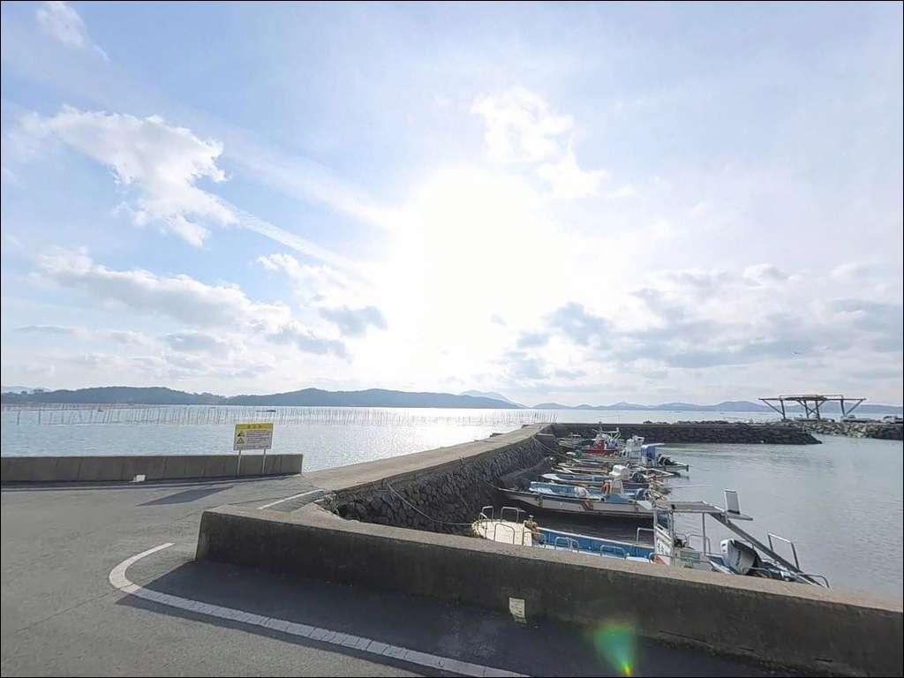
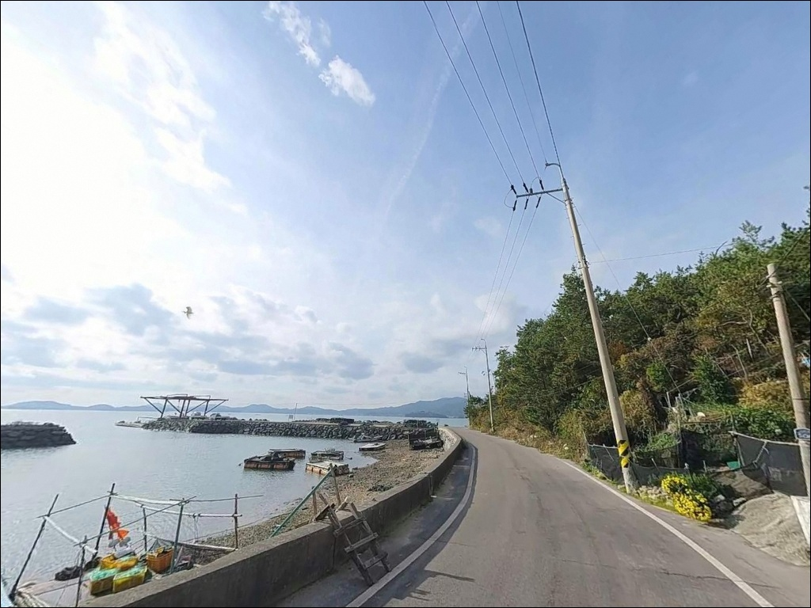
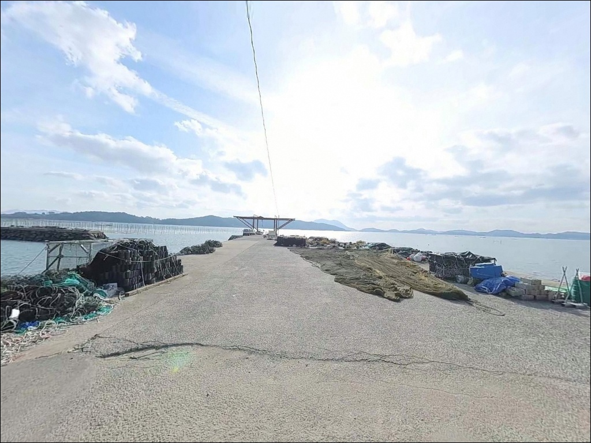
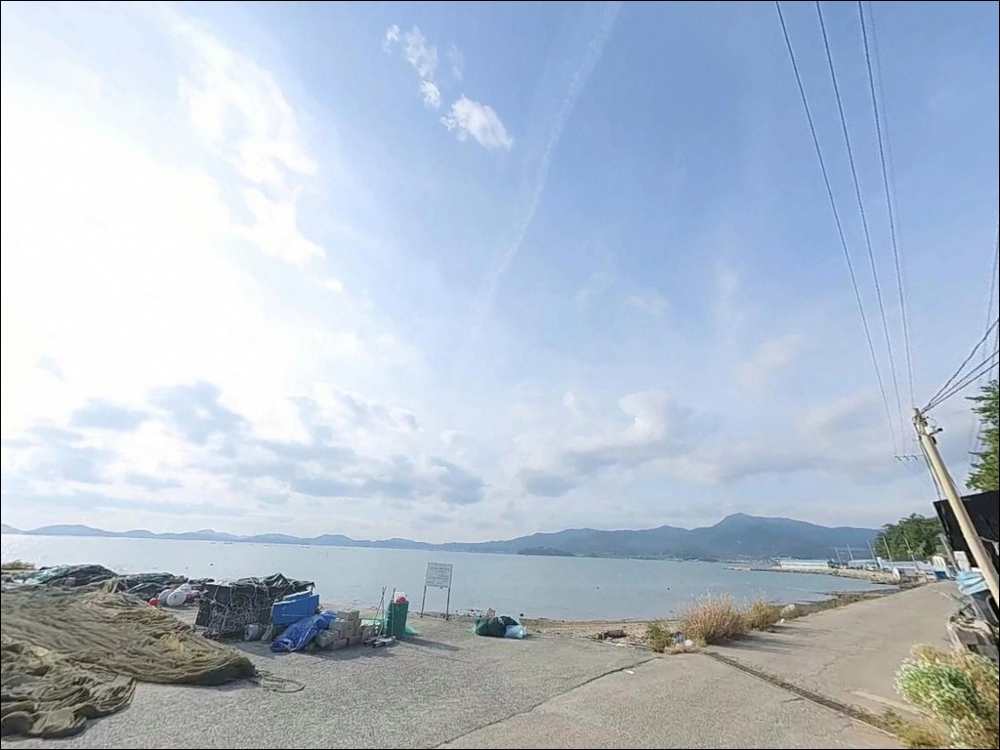
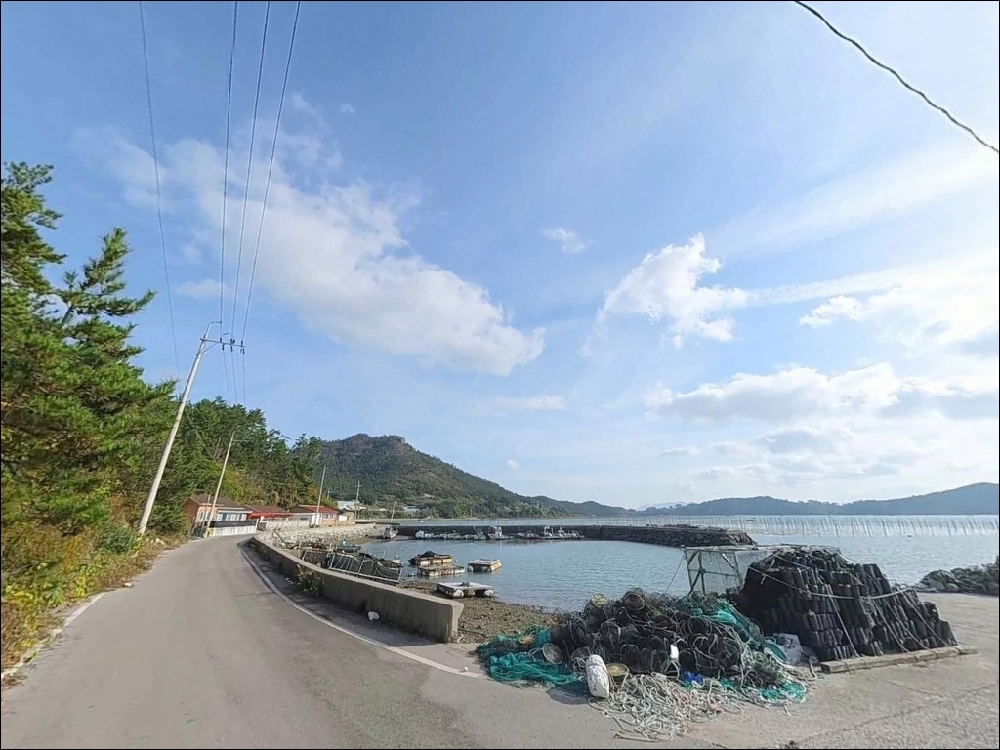
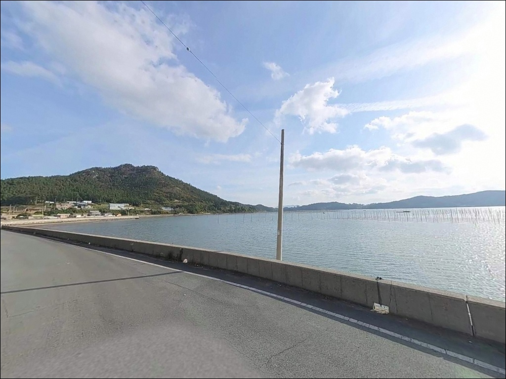

봉명리방파제, 고금도 전남 완도군 방파제 야간 낚시 핫플 차박 추천 장소


포인트 안내
봉명리방파제
전남 완도군 고금면 봉명리 665-10
고금도와 완도 사이 수로 구간은
조류가 2kn을 넘는 경우가 잦습니다.
이 흐름이 봉명리방파제 외항 방향으로
그대로 통과하는 구조라,
사리 전후 강조류 시간대에는
어떤 채비를 써도 흘러버리는 상황이
빈번하게 발생합니다.
전남 완도군 고금면 봉명리,
봉황산 남단이 해안으로 돌출한 지형 끝에
봉명리방파제가 위치합니다.
테트라포드 없이 발판이 안정적이고
전방이 넓게 트인 구조로,
원투낚시와 찌낚시에
캐스팅 조건이 잘 갖춰진 방파제입니다.
이 글은
봉명리방파제의 진입 동선, 차박 여건,
물때 판단 기준, 지형별 낚시 방식에 집중합니다.
조황 단정이나 특정 어종 보장은
이 글의 범위에 포함되지 않습니다.

1. 진입 동선과 포인트 접근성
고금도는 고금대교와 장보고대교로
육지 및 완도본섬과 연결되어 있어
차량 접근 자체는 어렵지 않습니다.
봉명리까지는 고금면소재지(농상리)에서
고금로를 따라 백운저수지 방향으로 이동한 뒤,
삼거리에서 우회전해 봉명청룡길로 진입하는
동선이 기본입니다.
봉명마을회관을 지나 선착장 방향 봉명길로
우회전하면 도로 끝자락에 방파제가 나옵니다.
봉명청룡길 구간부터는
1차선 농어촌 도로로 좁아지며,
대형 SUV나 캠핑카는 진입 전
위성지도로 구간을 먼저 확인하는 편이 안전합니다.
회차 공간은 방파제 입구 인근 공터에서 가능합니다.
마을회관 인근과 선착장 접근로 부근에
소규모 주차 공간이 있지만
수용 가능한 차량 대수가 많지 않아
주말 혼잡 시간대에는 자리 확보가 어려울 수 있습니다.

2. 차박 환경과 야간 체류 여건
봉명리는 민가 밀집도가 낮은 소규모 어촌 마을입니다.
야간 통행량이 적어 프라이버시 확보에는 유리하지만,
방파제 자체의 조명 시설이 제한적이어서
개인 헤드랜턴과 랜턴은 반드시 챙겨야 합니다.
봉황산 남단 돌출 지형 특성상
남서풍 계통에는 바람 노출이 있는 편이며,
북풍과 북동풍은 산체로 어느 정도 차단됩니다.
외항 방향이 트인 구조라
기상 변화에 따른 파도 영향을
출조 전날 기상청 예보로 먼저 확인하는 것이 기본입니다.
방파제 입구 공터 규모가 크지 않아
캠핑카나 캐러밴급 대형 차량은
방파제 직전까지 진입하기 어렵습니다.
차박 목적이라면 소형~중형 차량 기준으로 운용하고,
만조 시 선착장 일부 구역이 침수될 수 있으므로
주차 위치 선정 시 물때 기준으로 지대를 확인해야 합니다.


3. 주변 편의시설 및 인프라 현황
봉명리방파제 반경 500m 이내에는
편의점, 식당, 공중화장실을 기대하기 어렵습니다.
전형적인 어촌 마을 끝자락 구조로,
식수·얼음·낚시 소모품·연료 모두
출발 전에 완비하고 진입하는 것이
현실적인 준비 방식입니다.
고금면소재지(농상리)까지는 약 3~5km 거리입니다.
농협 하나로마트, 주유소, 보건지소, 면사무소가
이 일대에 집중되어 있어,
진입 전 마지막 보급 지점으로 활용하기에
적합한 동선입니다.
응급 상황 발생 시 종합병원급 의료 시설은
완도읍 방향(장보고대교 경유 약 15km) 또는
강진읍 방향(고금대교 경유 약 20~30km)으로
이동해야 합니다.
비상약품 사전 준비는 필수입니다.

4. 방문 전 물때와 준비사항
봉명리방파제 방문 전 가장 먼저 확인해야 할 것은
물때입니다.
고금도 서측 수로 해역은 조류 속도가
최대 2.1~2.4kn 수준으로 빠른 편이며,
만조·간조 차도 상당합니다.
정조 전후 시간대를 노려 진입 시각을 맞추는 것이
이 포인트 공략의 기본 전략입니다.
바다타임에서 봉명리방파제 기준 물때를 미리 확인하고,
강조류 시간대는 피해 출조 계획을 세우는 편이 좋습니다.
수심 급변 구간이 있는 지형 특성상
채비 손실도 잦으므로
여분 채비는 여유 있게 준비하는 편이 낫습니다.
마을 선착장 겸용 방파제이므로
어선 이동 동선과 어구에 접촉하지 않도록
자리를 선정하는 것이 기본 매너입니다.
야간 낚시 시에는 구명조끼 착용과
헤드랜턴 지참이 필수이며,
소규모 어촌 마을 특성상
야간 소음 관리에도 주의해야 합니다.

5. 조류와 지형이 만드는 낚시 여건
봉명리방파제의 핵심 지형 특성은
완도와 고금도 사이 수로 조류를
외항 방향에서 직접 받는 구조입니다.
고금도 서측 수로 해역은
창조류와 낙조류가 방향을 바꾸며
방파제 끝단 방향으로 흘러들어오는 구간이라
조류 변화가 조과에 직접 영향을 주는 포인트입니다.
방파제 끝단 외항 방향은
수심이 5~8m권으로 깊어지는 구간이 형성됩니다.
내항 쪽은 상대적으로 수심이 완만하며
펄 바닥 구조로 이어집니다.
내항과 외항의 수심 차이가 있어
노리는 어종에 따라 자리 선택이 달라지는 구조입니다.
테트라포드 없이 발판이 안정적이고
전방이 넓게 트인 방파제 구조 덕분에
원투 캐스팅에는 불편함이 없습니다.
고금도 서남 해역 패턴 기준으로
이 일대 바다에서는
감성돔, 농어, 볼락, 붕장어, 숭어 계열을
기대해볼 수 있는 지형입니다.
출조 전 최신 조황은 꼭 검색해 보시기 바랍니다.


6. 이 방파제에서 어울리는 낚시 스타일
봉명리방파제에서 가장 잘 맞는 낚시는
원투낚시입니다.
발판이 안정적이고 전방이 트인 구조 덕분에
캐스팅 거리를 충분히 확보할 수 있으며,
내항 쪽 펄 바닥에서 붕장어,
외항 방향에서 감성돔 계열을
노리는 방식이 이 지형 조건과 잘 맞습니다.
찌낚시도 이 포인트 구조와 잘 어울립니다.
방파제 끝단에서 수로 방향으로 흐르는 조류를
채비에 태워 흘리는 방식이 기본입니다.
조류가 강한 구간이므로
고부력찌 반유동 또는 구멍찌 전유동 채비로
감성돔과 숭어 계열을 공략하는 방식이 효율적입니다.
루어낚시도 시도해볼 만한 구조입니다.
수로 방향으로 캐스팅해 농어와 볼락 계열을 노리거나,
가을철에는 방파제 주변 석축 지대에서
갑오징어·주꾸미 에깅 반응이 나타나는
지형 조건을 갖추고 있습니다.
미노우 플러그나 소프트 웜 지그헤드 채비가
이 지형 구조에 어울립니다.

7. 대안 포인트와 플랜 B 동선
봉명리방파제 조건이 여의치 않을 때
가장 가까운 대안은
칠인리방파제(약 1.4km)입니다.
같은 해역 안에서 유사한 구조를 갖추고 있어
이동 시간이 짧고
비슷한 조건의 낚시가 가능합니다.
더 넓은 방파제 포인트를 원한다면
고금도 내 용초방파제(약 5km 이내)를
대안으로 검토할 수 있습니다.
규모가 더 크고 포인트 선택 폭이 넓어
복수 낚시 방식을 함께 운용할 때
유리한 구조입니다.
장보고대교를 건너 완도읍 방향으로 이동하면
완도 씨월드방파제가 있습니다.
감성돔 포인트로 알려진 곳이며
편의시설 접근성도 봉명리보다 좋아,
차박과 낚시를 함께 고려할 때
기점 포인트로 두기에 적합한 대안입니다.

수로 조류를 이해하면
봉명리방파제가 달라 보입니다
원투낚시나 찌낚시를 즐기는 낚시인이라면
봉명리방파제의 지형 조건은 잘 맞는 구조입니다.
발판이 안정적이고 전방이 넓게 트여 있으며,
완도와 고금도 사이 수로 조류가
방파제 끝단 방향으로 흘러드는 구간이라
조류 흐름을 활용한 낚시가 가능한 포인트입니다.
다만 물때 판단 없이 강조류 시간대에 진입하면
채비 컨트롤 자체가 어려워집니다.
정조 타이밍을 미리 계산하고,
여분 채비를 충분히 챙기고,
반경 500m 내 편의시설이 없다는 점을 감안해
완전 자급 체제로 진입하는 준비가
이 포인트 방문의 기본 조건입니다.
조용한 어촌 끝자락에서
수로 조류를 옆에 두고 낚시하는 출조를 원하는 분이라면,
물때 확인과 진입로 사전 점검만 갖춰두면
낚시와 차박을 함께 즐길 수 있는
고금도의 한 페이지가 될 수 있는 포인트입니다.